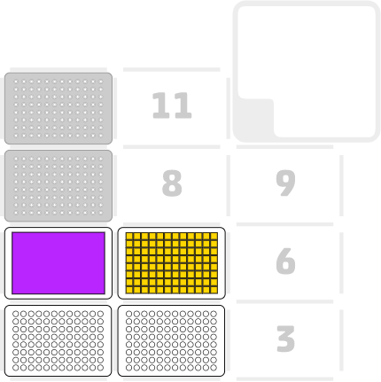

Lesley Ives
11 March 2024
OP_PD_001 v1.0
Creating Glycerol Stocks in FluidX Tubes
Description
This protocol creates duplicate glycerol stocks from colony suspensions. Two racks of Fluid X tubes are prepared with glycerol prior to sample transfer from a 96 deep well plate.
Labware and Liquids

- Right mount: An 8-channel p300 pipette (GEN2)
- Slots 1 and 2: Racks with 96 FluidX tubes
- Slot 4: Reservoir with relevant amount of glycerol
- Slot 5: 96 Deep well plate containing colony suspensions
- Slots 7 and 10: Tip racks with 300ul tips
Execution
- Set up the deck as described above
- Run the protocol
Script
Creating Glycerol Stocks in FluidX Tubes
Tips and best practices
Carry out a test run of the protocol using the labware and water to ensure that the positioning of labware and tips is suitable. Re-calibration of the deck or labware may be required.